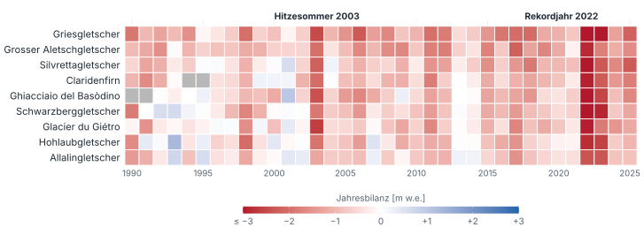
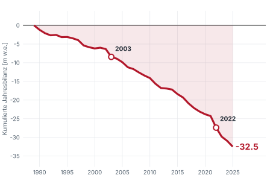
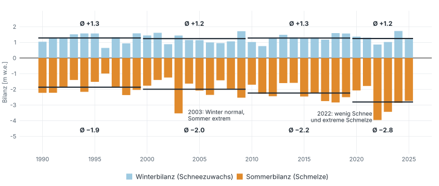

Die Gletscher verlieren Masse – und der Sommer ist der Grund
Jährliche Massenbilanz von neun Schweizer Gletschern mit fast lückenloser Messreihe seit 1990. Negative Werte bedeuten Masseverlust, positive Massenzuwachs. Die Einheit «m w.e.» steht für Meter Wasseräquivalent: –1 bedeutet, dass ein Gletscher über seine ganze Fläche im Mittel eine Wasserschicht von 1 m verloren hat.
1Seit 2011 ist fast jedes Feld rot
Jede Zeile ist ein Gletscher, jede Spalte ein Jahr, sortiert nach dem mittleren Verlust (stärkster Verlust oben). Seit 2011 sind nur 4 % der Felder positiv (blau), zwischen 1990 und 2010 waren es rund 20 %.

2In Summe: rund 32 Meter Wasser weniger

–32.5m w.e.
Kumulierte Jahresbilanz 1990–2025, Mittel der neun Gletscher
In nur 3 von 36 Jahren (1993, 1995, 2001) war die mittlere Jahresbilanz positiv.
Die zwei Extremjahre 2003 (–2.1) und 2022 (–3.1) machen zusammen rund ein Sechstel des gesamten Verlusts aus.
3Der Winter bleibt gleich, der Sommer setzt den Gletschern zu
Die Winterbilanz (Schneezuwachs) schwankt von Jahr zu Jahr, ihr Mittel bleibt aber stabil. Die Sommerbilanz (Schmelze) wird dagegen Jahrzehnt für Jahrzehnt negativer. Die schwarzen Striche zeigen den Mittelwert pro Jahrzehnt (2020er: 2020–2025).

Winter
+1.3 → +1.2 m w.e., 1990er bis 2020er. Praktisch kein Trend (Mittel +1.3, Schwankung ±0.3).
Sommer
–1.9 → –2.8 m w.e., 1990er bis 2020er. Rund 0.3 m w.e. mehr Verlust pro Jahrzehnt.
Wer bestimmt die Jahresbilanz?
0.92 vs. 0.35 Korrelation der Jahresbilanz mit der Sommer- bzw. der Winterbilanz.
2003 – Hitzesommer
Normaler Winter (+1.4), extremer Sommer (–3.5). Mittlere Jahresbilanz –2.1, alle neun Gletscher zwischen –2.7 und –1.2.
2022 – Rekordjahr
Wenig Schnee (+0.9) und noch stärkere Schmelze (–4.0). Mittlere Jahresbilanz –3.1, alle neun Gletscher zwischen –3.9 und –2.4.